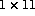

Given,
A = (/2,3,7,4,9,1,5,5,0,5,5/)
then GRADE_DOWN(A) is the 2D (  ) array:
(/5,3,7,8,10,11,4,2,1,6,9/)
and
GRADE_UP(A,DIM=1) is the 1D array:
(/9,6,1,2,4,7,8,10,11,3,5/)
Note how the multiple values of 5 are sorted.
If the DIM= specifier is not used then the result of these functions is always a 2D array (of coordinates) and has shape:
(/ SIZE(SHAPE(A)),PRODUCT(SHAPE(A))/)
Otherwise the shape is the same as A.
Elements of the same value are ordered by their position in array element order. For the repeated value of 5 (which occurs four times in the source array), the result contains element 7 before element 8 which comes before element 10, and so on.
Consider a further example, if A is the 2D array:
1 9 2
4 5 2
1 2 4
Then GRADE_DOWN(A) is (the coordinates)
1 2 2 3 3 1 2 1 3
2 2 1 3 2 3 3 1 1
Since A is a 2D array of 9 elements the result has 9 coordinates, ie 18 elements.
The DIM= specifier can be used: GRADE_DOWN(A,DIM=1) is
2 1 3
1 2 1
3 3 2
The result GRADE_DOWN(A,DIM=1) is three columns, each containing the indices of the sorted elements for that column.
Now try this question